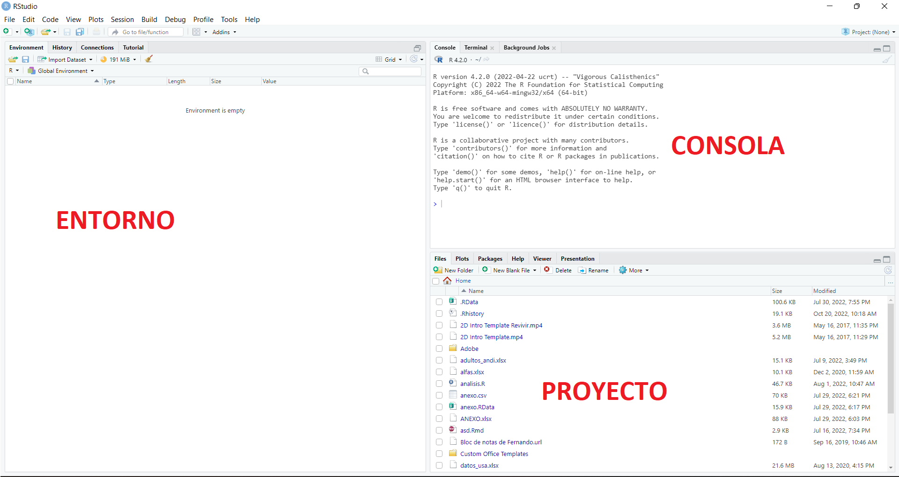

Primera reunión
Preparando todo para arrancar
Es importante siempre tener en cuenta que sistema operativo tenemos en nuestra computadora.
Es importante instalar R y RStudio porque de lo contrario algunos paquetes que usemos podrían no instalarse bien o directamente no instalarse. Entonces:
- Descargar e instalar R (base R). Para eso abrir este link y elegir cualquiera de las opciones. Yo por ejemplo elegí el mirror de la plata

- Descargar e instalar RStudio. Para eso abrir este link

Arrancnado con R Studio
RStudio es un entorno de desarrollo integrado (IDE) para el lenguaje de programación R, dedicado a la programación estadística y a la visualización de datos entre otras cosas. En si, RStudio proporciona un editor incorporado, funciona en todas las plataformas (incluyendo en servidores) y proporciona muchas ventajas, como la integración con version control y gestión de proyectos.
Lo primero que van a ver
Cuando abra RStudio por primera vez, van a ver tres paneles (toooodo esto se puede modificar):
- La consola/Terminal R interactiva
- Entorno/Historial/Conexiones
- Archivos/Gráficos/Paquetes/Ayuda/Viewer

Sección de Archivos/Gráficos/Paquetes/Ayuda
En esta sección se presentan todos los archivos, carpetas, datos que tengamos en nuestro proyecto. Acá vamos a poder crear carpetas, modificar nombres, mover archivos etc. En la pestaña de Archivos, un proyecto básico se ve de la siguiente manera:
El resto de pestañas estarán compuestas por aquello que indique su nombre. En la pestaña Plots/Gráficos podremos ver los gráficos que generemos, en la pestaña Paquetes veremos los paquetes que tenemos instalados y que estén (o no) cargados en ese momento y en la pestaña Help/Ayuda encontraremos gran parte de la documentación de los paquetes y de las funciones que necesitemos.
El entorno
En el entorno global se listaran todos los objetos que vayamos creando, ya sean bases de datos, variables, en si todo las cosas que estemos manejando en ese momento. Ademas de mostrarnos todos nuestros objetovs, también vamos a obtener información del tipo (numeros, cadenas de caracteres, data frame etc), su tamaño y medida, y sobre aquello que contiene. En el caso del data.frame se puede ver que es una base con dos variables (columnas) y 5 filas (observaciones)
La consola
La consola de R aparece en el cuadro inferior izquierdo apenas abrimos RStudio y corresponde al entorno computacional de este lenguaje. En pocas palabras, todo el codigo que escribimos es interpretado en la consola. Podemos escribir código directamente en la consola y R nos dará el resultado de lo pidamos allí mismo.
Por ejemplo, en la imagen de abajo vemos que podemos pedirle a R que calcule la media de una serie de números que va del 1 al 20 (mean(1:20)) y R nos arroja el resultado. Todo esto en la misma consola.
Como dijimos, la consola interpreta todo el código que escribamos o le enviemos desde nuestro script (más abajo vemos esto). También la consola va a ir registrando todo lo que le enviemos. Por ejemplo, ahora le pedimos que calcule el desvió estándar de la misma serie de números del ejemplo anterior sd(1:20)
Otro aspecto importante de la consola es que te informa la versión de R que estamos utilizando (1), en donde estamos trabajando (2) y si actualmente se encuentra interpretando código

Por ultimo, lo cabe destacar que la consola se reiniciara cada vez que cerremos y abramos RStudio. Por lo que es importante no trabajar constantemente en esta sección. Lo mejor es crear un nuevo archivo .R y trabajar ahi. En un archivo .R podremos volver a nuestro código, siempre y cuando guardemos nuestro archivo antes de cerrar el programa.

Trabajando con proyectos
(cargar video de creacion de proyectos)
File -> New Project -> New Directory -> New Project Ahi ponemos nombre del proyecto y elejimos donde se va a crear
Estructura básica de un proyecto

En nuestro RStudio…